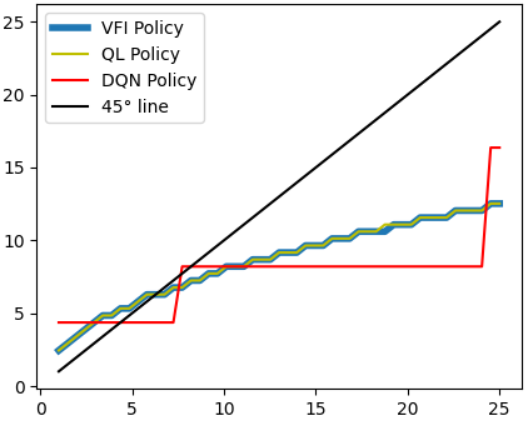
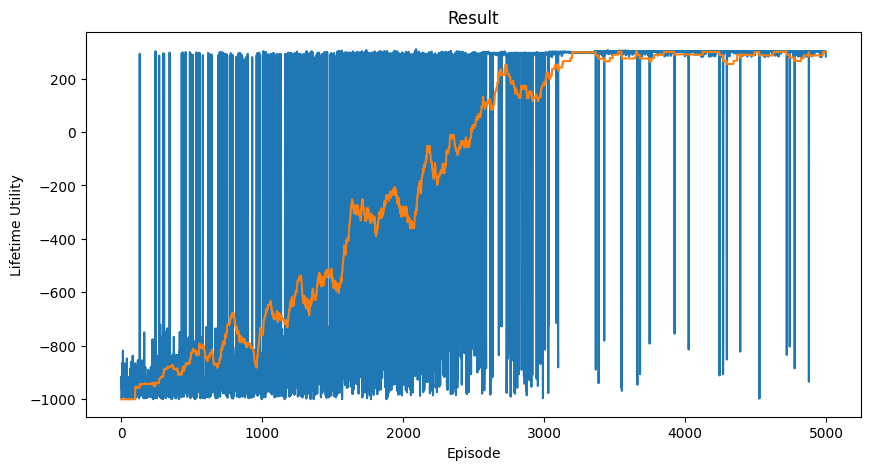

NGMRL
Solving the neoclassical growth model with reinforcement learning.


Notes and Code
Selected notebooks, lecture notes, and coding projects.
Solving the neoclassical growth model with reinforcement learning.


Coding the value function iteration algorithm in
multiple languages. The JAX implementation in
vfi.ipynb was executed on Colab with a
GPU and produced large speed gains.